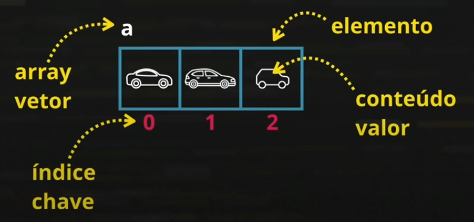
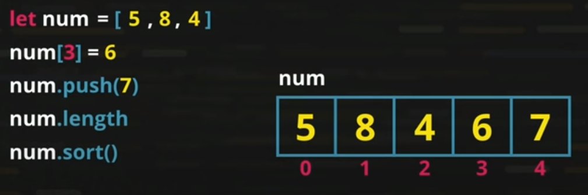

Variáveis Simples
Variáveis que armazenam somente um valor por vez.
Variáveis Compostas (Vetor/Array)
Variáveis capazes de armazenar vários valores em uma mesma estrtura. Este é um tipo de variável que contém vários espaços para armazenamento de dados, estes espaços não tem um limite e são definidos a medida em que os valores são inseridos.
Exemplos de Arrays
Os arrays são representados da seguinte forma: let numeros = [0,1,2], onde os números dentro dos colchetes, representam os elementos do array, que podem ser compostos por números ou strings.
Os itens do array são identificados através de índices que sempre iniciam a partir do 0, conforme estrutura detalhada na imagem abaixo.
Manipulando dados nos arrays
Quando você conhece a extensão do array e deseja inserir um valor, você pode simplesmente informar o nome do array, indicar a posição/índice ainda não existente e o dado que deseja inserir e isso fica assim: num[3} = 6.
Outra maneira quando não se conhece a extensão do array é utilizando o método 'push', neste caso, o valor será inserido automaticamente na última posição do array e fucniona assim: num.push(7).
Para identificar a extensão de um array, basta utilizar o atributo length (este não é um método) ele retornará a quantidade de itens do array e fica desta forma: num.length
Você também pode ordenar os valores de um array utilizando o método 'sort', bastante colocá-lo da seguinte forma: num.sort().
Você pode identificar a posição/chave de um valor dentro de um array utilizando o método 'indexOf', e para tanto, você irá digitar num.indexOf(valor a ser buscado).
Neste caso, o programa irá percorrer os itens do array e buscar pelo valor indicado, caso o valor seja encontrado dentro do array, ele retornará a posição do valor no array, e caso o item não esteja dentro do array, ele retornará o valor '-1' indicando que o item não foi encontrado.
Para percorrer os valores de um array é comum a utilização do laço de repetição 'for', já utilizado em aulas anteriores.
Veja abaixo uma estrutura mais antiga do for e uma estrutura mais moderna e simplificada de se declarar o for:

Uso de Funções e Eventos
Este tópico já foi ensinado em módulos anteriores, caso tenha dúvidas, revisar o material.